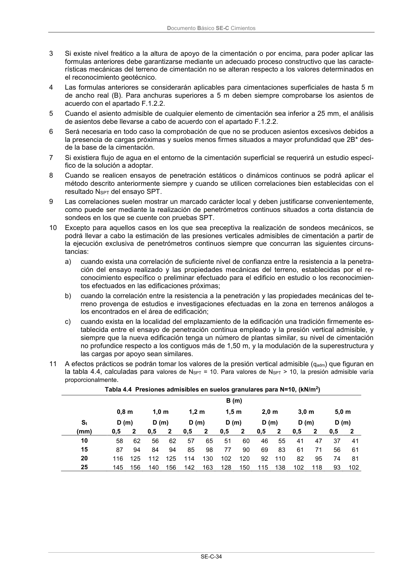

DB-SE-C · Página 39 · versión 2019-12-20
SHA256: a71133f4b0dca253e45ea3071c70f2a512354bcc5cd841bf89b1a502f567ac5e · página física 39 de 165 · métodos de encabezado
solo si están cotejados.
Formatos: Markdown · JSON de bloques · PDF p. 39 · imagen PNG
Documento Básico SE-C Cimientos SE-C-34 3 Si existe nivel freático a la altura de apoyo de la cimentación o por encima, para poder aplicar las formulas anteriores debe garantizarse mediante un adecuado proceso constructivo que las caracte- rísticas mecánicas del terreno de cimentación no se alteran respecto a los valores determinados en el reconocimiento geotécnico. 4 Las formulas anteriores se considerarán aplicables para cimentaciones superficiales de hasta 5 m de ancho real (B). Para anchuras superiores a 5 m deben siempre comprobarse los asientos de acuerdo con el apartado F.1.2.2. 5 Cuando el asiento admisible de cualquier elemento de cimentación sea inferior a 25 mm, el análisis de asientos debe llevarse a cabo de acuerdo con el apartado F.1.2.2. 6 Será necesaria en todo caso la comprobación de que no se producen asientos excesivos debidos a la presencia de cargas próximas y suelos menos firmes situados a mayor profundidad que 2B* des- de la base de la cimentación. 7 Si existiera flujo de agua en el entorno de la cimentación superficial se requerirá un estudio especí- fico de la solución a adoptar. 8 Cuando se realicen ensayos de penetración estáticos o dinámicos continuos se podrá aplicar el método descrito anteriormente siempre y cuando se utilicen correlaciones bien establecidas con el resultado NSPT del ensayo SPT. 9 Las correlaciones suelen mostrar un marcado carácter local y deben justificarse convenientemente, como puede ser mediante la realización de penetrómetros continuos situados a corta distancia de sondeos en los que se cuente con pruebas SPT. 10 Excepto para aquellos casos en los que sea preceptiva la realización de sondeos mecánicos, se podrá llevar a cabo la estimación de las presiones verticales admisibles de cimentación a partir de la ejecución exclusiva de penetrómetros continuos siempre que concurran las siguientes circuns- tancias: a) cuando exista una correlación de suficiente nivel de confianza entre la resistencia a la penetra- ción del ensayo realizado y las propiedades mecánicas del terreno, establecidas por el re- conocimiento específico o preliminar efectuado para el edificio en estudio o los reconocimien- tos efectuados en las edificaciones próximas; b) cuando la correlación entre la resistencia a la penetración y las propiedades mecánicas del te- rreno provenga de estudios e investigaciones efectuadas en la zona en terrenos análogos a los encontrados en el área de edificación; c) cuando exista en la localidad del emplazamiento de la edificación una tradición firmemente es- tablecida entre el ensayo de penetración continua empleado y la presión vertical admisible, y siempre que la nueva edificación tenga un número de plantas similar, su nivel de cimentación no profundice respecto a los contiguos más de 1,50 m, y la modulación de la superestructura y las cargas por apoyo sean similares. 11 A efectos prácticos se podrán tomar los valores de la presión vertical admisible (qadm) que figuran en la tabla 4.4, calculadas para valores de NSPT = 10. Para valores de NSPT > 10, la presión admisible varía proporcionalmente. Tabla 4.4 Presiones admisibles en suelos granulares para N=10, (kN/m2) B (m) 0,8 m 1,0 m 1,2 m 1,5 m 2,0 m 3,0 m 5,0 m St D (m) D (m) D (m) D (m) D (m) D (m) D (m) (mm) 0,5 2 0,5 2 0,5 2 0,5 2 0,5 2 0,5 2 0,5 2 10 58 62 56 62 57 65 51 60 46 55 41 47 37 41 15 87 94 84 94 85 98 77 90 69 83 61 71 56 61 20 116 125 112 125 114 130 102 120 92 110 82 95 74 81 25 145 156 140 156 142 163 128 150 115 138 102 118 93 102
